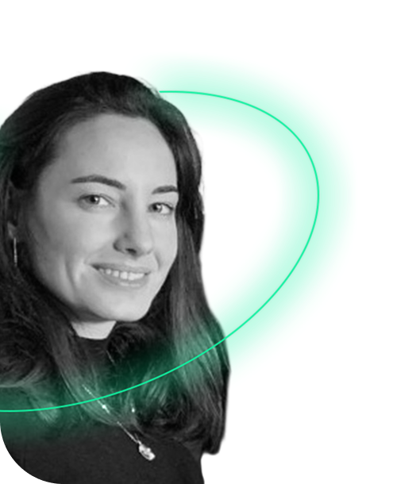

Bon c'est bien moi, pas mon alternat
J'ai 31 ans et je conçois des produits qui font dire "ah, c'était simple en fait"... bref je suis Product designer.
Avec 12 ans de gymnastique artistique derrière moi, l'équilibre est devenu une seconde nature : utile pour jongler entre idées, contraintes et créativité... et surtout rester stable quand tout part un peu en vrille.
L'escalade, elle, m'a appris à observer, anticiper et trouver la bonne voie, même quand elle n'est pas évidente.
On dit également que j'ai une énergie contagieuse, le sourire facile et un goût prononcé pour les défis (dans le travail et en dehors).
Bonus : je parle couramment "utilisateur perdu", "stakeholder pressé" et "deadline imminente".
Découvrir mes projets
Encadrement d'une vingtaine de filles, âgées de 8 à 12 ans, durant une année et comptant une à deux activités par mois, un week-end campé, des évènements avec le groupe, et un camp d'été de 7 jours.